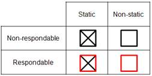
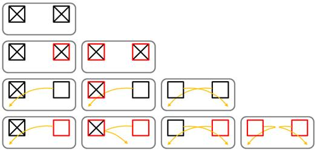

v-rep 設計動態模擬
在V-REP中，僅動態模擬有限數量的物件(objects)。這些是 shapes,joints和 force sensors，但它將取決於場景結構和物體屬性，是否將動態模擬給定物件。在模擬過程中可以輕鬆識別動態模擬對象，因為在場景層次結構中(scene hierarchy)對象名稱旁邊會出現以下圖標：

點擊場景層次結構中的圖標（僅在模擬期間）將顯示與對象的動態行為相關的一些信息。應該通過動態模擬但由於某種原因無法動態模擬的對象將顯示以下圖標：

Static/non-static, respondable/non-respondable shapes
根據動態模擬過程中的行為，物件可分為4組：

在動態模擬期間，靜態形式不會受到影響（即它們相對於其從屬物件的位置是固定的），而非靜態物件將直接受到重力或其他約束（例如，動態啟用的關節，見下文）的影響。可響應的物件在動態碰撞期間相互影響（即它們產生相互碰撞反應，它們將相互反彈）。下圖說明了靜態/非靜態，可連動/不可連動的行為：

[靜態/非靜態，可連動/不可連動的形式行為和交互]
兩個可連動的物件將一直產生碰撞反應，除非它們各自的碰撞互相不重疊。可以在shape dynamics properties對話框中設置靜態/非靜態，可連動/不可連動的形狀屬性以及隱藏碰撞
Dynamically enabled joints/force sensor
如果沒有其他限制，非靜態物件將下降（即受重力影響）。可以通過將兩個物件與動態啟用的 關節或動態啟用的 力傳感器連接在一起來設置物件之間的動態約束。
動態啟用的關節是處於力或扭矩模式的關節或以混合方式操作的關節（參見關節屬性），並且具有作為從屬的物件和正好一個必須是非靜態物件的子物件。另外，可以在環閉合配置中涉及關節。在這種情況下，關節必須通過虛擬 - 虛擬鏈接連接到兩個形狀（其中鏈接類型必須是動態，重疊約束）。對於虛擬虛擬鏈接，請參閱虛擬屬性。
動態啟用的力傳感器是力傳感器，其具有作為物件的物件和恰好一個必須是非靜態形式的子物件。另外，可以將力傳感器包括在環閉合配置中。在這種情況下，力傳感器必須通過虛擬 - 虛擬鏈接（其中鏈接類型必須是動態，重疊約束）連接到兩個物件。對於虛擬鏈接，請參閱虛擬屬性。
下圖顯示了關節或力傳感器被認為是動態啟用的有效情況（假設關節/力傳感器和兩個物件位於動態模擬的模型中，這是默認情況）：


按照上述指南非常重要，以獲得動態啟用的關節或力傳感器。在模擬過程中，如果V-REP發現未動態啟用的力傳感器，它將在場景層次結構視圖中的名稱旁邊顯示一個小警告圖標。對於力/扭矩模式中的關節或者應該以混合方式操作並且不是動態啟用的關節也是如此。
以下是一些不會動態啟用關節的示例情況：
接頭不是有力或扭矩模式，接頭不是以混合方式運行。
關節的從屬沒有形式。
關節有多個子物件。
關節直接連接到另一個關節。
關節（或它連接的兩種形式之一）位於未動態模擬的模型中
以下是一些不會動態啟用力傳感器的示例情況：
力傳感器的從屬沒有形式。
力傳感器有多個子物件。
力傳感器（或它連接的兩種形式之一）位於未動態模擬的模型中。
V-rep << Previous Next >> BubbleRob